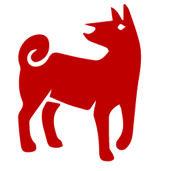

MAIN PAGE

The Dog occupies the eleventh position in the Chinese zodiac.
- Lucky Colors: red, green, and purple
- Lucky Numbers: 3, 4, 9
- Lucky Flowers: rose, cymbidium orchids
- Year of Birth: 1934, 1946, 1958, 1970, 1982, 1994, 2006, 2018, and 2030
The Dog's Personality: Loyal, Honest...
Dogs are loyal and honest, amiable and kind, cautious and prudent. Due to having a strong sense of loyalty and sincerity, Dogs will do everything for the person who they think is most important.
As Dogs are not good at communication, it is difficult for them to convey their thoughts to others. Therefore, Dogs tend to leave others with the impression that they have a stubborn personality.